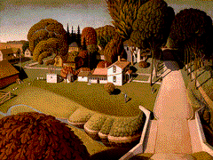

<!--This file created 10/16/97 5:49 PM by Claris Home Page version 2.0-->
<HTML>
<HEAD>
   <TITLE>Mpls Inst Arts - World Mythology: Birthplace of Herbert
   Hoover</TITLE>
   <META NAME="GENERATOR" CONTENT="Claris Home Page 2.0">
   <X-SAS-WINDOW TOP="115" BOTTOM="480" LEFT="64" RIGHT="594">
<HEAD>
</HEAD>
<BODY TEXT="#111111" LINK="#660000" ALINK="#AA0000" VLINK="#444444" BACKGROUND="backgroundbrown.gif">

<P><FONT SIZE="+2">Curriculum Materials: World Mythology</FONT>
<HR>
<!--------Top Myth Menu------><TABLE BORDER="3">
   <TR>
      <TD>
         <P><CENTER><A HREF="introduction.html#top">Introduction</A>
         ~ <A HREF="mythbyimage.html#top">Myth by Image</A> ~
         <A HREF="culturelist.html#top">Myth by Culture</A> ~
         <A HREF="myths.html#top">Mythological Comparisons</A> ~
         <A HREF="glossary.html#top">Glossary</A> ~
         <A HREF="suggestedreading.html#top">Suggested Readings</A> ~
         <A HREF="downloadables.html#top">Downloadable Resources</A>
         ~ <A HREF="../tta/classroom_materials_order.html">How to Order</A> ~
         <A HREF="myth_evaluation.html#top">Your Comments Wanted</A>
         ~ <A HREF="#Story">Story</A> ~
         <A HREF="#Background">Background</A> ~
         <A HREF="#Questions">Questions</A></CENTER>
      </TD></TR>
</TABLE>
<HR>
<A NAME="top"></A>&nbsp;<TABLE BORDER="0" CELLSPACING="10" WIDTH="445">
   <TR>
      <TD>
         <P><A HREF="full_jpg/16.jpg"></A><BR>
         
         <B>Image 16</B><BR>
         
         <FONT SIZE="+2">The Birthplace of Herbert Hoover,<BR>
         
         West Branch, Iowa</FONT><BR>
         
         1931<BR>
         
         Grant Wood<BR>
         
         United States (1891-1942)<BR>
         
         Oil on composition board<BR>
         
         29 5/8 x 39 3/4 inches<BR>
         
         The John R. Van Derlip Fund 81.105; owned jointly with the
         Des Moines Art Center<BR CLEAR="left">
         
         
         <HR>
         </P>
         
         <P><CENTER><A NAME="Key"></A><B>Key Ideas</B></CENTER></P>
         
         <UL>
            <LI>The notion that anyone can grow up to become
            president is one of the United States' most beloved and
            enduring myths.
            
            <LI>Herbert Hoover rose from humble beginnings in a small
            midwestern town to become the 31st president of the
            United States.
            
            <LI>The precise <A HREF="glossary.html#LINEAR">LINEAR</A>
            <A HREF="glossary.html#PATTERN">PATTERNS</A> and close
            attention to details in this painting are hallmarks of
            Grant Wood's
            <A HREF="glossary.html#REGIONALISM">REGIONALIST</A>
            style.
         </UL>
         
         <P>
         <HR>
         <A NAME="Story"></A></P>
         
         <P><CENTER><B>Story</B></CENTER></P>
         
         <P>Herbert Clark Hoover was born in 1874 in West Branch,
         Iowa. He lived with his parents and two siblings in a small
         cottage. Herbert's parents died - his father from typhoid
         fever and his mother from pneumonia - when he was very
         young. In 1884, 10-year-old "Bertie" moved to Oregon to live
         with his uncle, a country doctor. At 17, he entered Stanford
         University, from which he graduated with a degree in
         engineering.</P>
         
         <P>Hoover became a very successful mining engineer, making
         his fortune operating mines in San Francisco, England,
         Australia, and China. When World War I broke out, Hoover
         established the American Relief Committee in London at the
         request of the United States government, helping more than
         100,000 Americans to escape war-torn Europe. Later he
         chaired the Commission for Relief in Belgium and served as
         the United States Food Administrator. After the war, he
         created the American Relief Administration, administering
         more than 100 million dollars for clothing and food for
         oppressed Europeans and Russians recovering from German
         occupation. When government funds for that program ran out,
         Hoover secured private contributions to keep it going.</P>
         
         <P>Hoover's dedication to relief efforts made him a hero.
         Both political parties wanted him to become their
         presidential candidate. He ran for a time in the 1928
         Democratic primaries, but was ultimately victorious as a
         Republican candidate. Recognizing the political advantage of
         his popular rags-to-riches story, Hoover kicked off his
         campaign with a big public rally in his rural hometown. In
         1929 the poor orphan boy from Iowa became president of the
         United States.</P>
         
         <P>
         <HR>
         <A NAME="Background"></A></P>
         
         <P><CENTER><B>Background</B></CENTER></P>
         
         <UL>
            <B>Grant Wood</B><BR>
            
            The artist Grant Wood is something of a legend himself,
            another small-town Iowa boy made good. Wood studied art
            in Europe for several years but returned to the United
            States in the 1920s. Dissatisfied with modern painting
            styles, he developed his own style inspired by the
            brilliant colors and tiny details of 15th-century Flemish
            paintings.
            
            <P>Responding to a resurgence of nationalism and a new
            fascination with the American past, Wood painted many
            <A HREF="glossary.html#GENRE">GENRE</A> scenes of
            historical and regional interest, including farmhouses,
            small-town folk, and the rural landscape. He and other
            midwestern artists who painted scenes of Americana were
            called Regionalists. Wood emphasized description and
            narrative in the same way as the contemporary American
            writers he admired. Like Sinclair Lewis, he raised
            ordinary experiences of daily life to mythical
            proportions.</P>
            
            <P><B>The Birthplace of Herbert Hoover, West Branch,
            Iowa</B><BR>
            
            Wood places the viewer at the crest of a steep hill,
            looking down into a green valley where a tour guide
            points to a small cottage beside a larger white house.
            But this is not an ordinary cottage - it is the place
            where Herbert Hoover was born.<BR>
            
            <BR>
            
            Warm midwestern sunshine illuminates the large family
            homes, neatly mown lawns, and perfectly clipped trees in
            the quiet neighborhood surrounding the cottage. A gentle
            breeze blows laundry hanging near the cottage. In the
            front, three orange birds fly over a clear blue stream.
            Beyond them, toylike chickens peck around logs leaning
            against a red barn, and even farther back, two boys in
            overalls chat on the sidewalk. A road runs between rows
            of shade trees on the right, and a golden field, dotted
            with haystacks, extends beyond the houses on the left.
            </P>
            
            <P>Typical of Grant Wood's Regionalist style, everything
            is neat and regimented, evoking the simplified forms of
            American folk art. Forms, such as the solid, rounded
            trees and boxlike houses, are reduced to
            <A HREF="glossary.html#GEOMETRIC">GEOMETRIC</A> shapes.
            Many tiny straight brushstrokes define the trim lawns,
            creating a rhythmic pattern across much of the painting,
            and patterned clumps of enormous autumnal leaves define
            the trees. Unrealistically, all of the forms, whether
            close or distant, are bathed in the same clear light and
            described with the same precise detail.</P>
            
            <P>Warm autumnal colors - browns, golds, oranges, and
            yellow-greens - dominate Wood's painting. The white
            siding of the cottage and house create a striking
            contrast against the golden-green lawn.</P>
            
            <P><B>Hoover's Birthplace</B><BR>
            
            Wood did not re-create the scene as it may have looked at
            the president's birth. Instead he painted it as the
            tourist attraction it became. Upon Hoover's election to
            the presidency, the ordinary cottage, which had been
            turned into a kitchen by later owners, began to attract
            visitors from all over the country. The owner of the
            cottage charged visitors ten cents for tours of it and
            set up a souvenir stand. Wood included a sign in front of
            the house and a pink rock in which the Daughters of the
            American Revolution placed a plaque identifying the house
            as Hoover's birthplace.
            <HR>
            </P>
            
            <P><CENTER><B><A NAME="Questions"></A>Discussion
            Questions</B></CENTER></P>
            
            <P><B>Look</B><BR>
            
            <B>1.</B> <B>Tell the story of Herbert Hoover. </B>What
            part of the story do you see in Grant Wood's painting?
            <B>(Herbert Hoover's birthplace.)</B> Herbert Hoover was
            born in West Branch, Iowa, in 1874. What clues tell you
            that this painting shows Hoover's birthplace later on in
            his life? <B>(The sign and tour guide suggest that Hoover
            had become famous by the time Grant Wood painted
            this.)</B> Where are the visitors at this tourist
            attraction? Who is the tour guide pointing the way for?
            <B>(You - the viewer of the painting!)</B></P>
            
            <P><B>2.</B> Grant Wood's
            <A HREF="glossary.html#STYLE">STYLE</A> can be compared
            to American folk art because of the way he simplified
            forms in his paintings. What forms did he simplify in
            this painting? <B>(Trees and shrubs are solid round
            shapes rather than irregular as they are in nature, and
            the houses are boxlike.)</B></P>
            
            <P><B>3.</B> Grant Wood created
            <A HREF="glossary.html#PATTERN">PATTERN</A> in his
            painting by repeating lines and forms. Where do you see
            repeated lines? <B>(The leaves of the trees and shrubs
            are made up of regular repeated lines. The lawn is
            painted with tiny repeated lines.)</B> Where do you see
            repeated forms that create pattern? (Tops of trees, tree
            trunks and shadows that line the road on the right,
            rounded forms of shrubs to the left of the bridge,
            haystacks in the
            <A HREF="glossary.html#BACKGROUND">BACKGROUND</A> on the
            left.)</P>
            
            <P><B>4.</B> What time of year is it in Grant Wood's
            painting? <B>(Late summer.)</B> How can you tell?
            <B>(Lush greens, some leaves beginning to turn fall
            colors.)</B> What time of day is it? (Morning.) How can
            you tell? <B>(Shadows indicate sun is at an angle. Bright
            light indicates sun is growing stronger rather than
            fading into evening sunset.)</B></P>
            
            <P><B>5.</B> Artists use several
            <A HREF="glossary.html#PERSPECTIVE">PERSPECTIVE</A>
            techniques to give their work the illusion of depth.
            Which techniques did Grant Wood use? <B>(Objects closest
            to the viewer appear larger. Objects far away appear
            smaller and closer to the horizon line [scale]; objects
            closest to the viewer overlap and partially hide objects
            in the distance [overlap]; objects recede along imaginary
            lines that meet at a "vanishing point" on the horizon
            line [linear
            <A HREF="glossary.html#PERSPECTIVE">PERSPECTIVE</A>].)</B>
            Which technique didn't he use? <B> (Distant objects have
            less detail and muted gray-toned colors compared to
            objects close to the viewer
            [<A HREF="glossary.html#AERIAL">AERIAL
            PERSPECTIVE</A>].)</B></P>
            
            <P><B>6.</B> Grant Wood was a
            <A HREF="glossary.html#GENRE">GENRE</A> painter. He was
            interested in painting scenes from everyday life in the
            midwestern United States. What is "everyday" about the
            scene in this painting? <B>(Chickens in the yard,
            children playing, laundry hanging on the
            clothesline.)</B> What is not "everyday?" <B>(Tour guide
            and signage signify an extraordinary place; yard and road
            excessively neat and ordered.)</B></P>
            
            <P>
            <HR>
            <BR>
            
            <B>Think</B><BR>
            
            <B>1.</B> What popular American myth does Herbert
            Hoover's story exemplify? <B>(Anyone can grow up to
            become president of the United States.)</B> Do you think
            this myth holds true even today? Could a girl grow up to
            be president of the United States? Does a person's race
            play a part in his or her ability to achieve the
            presidency? Is it easier to become president if you are
            wealthy? Why or why not?</P>
            
            <P><B>2.</B> Grant Wood's painting of Herbert Hoover's
            humble beginnings shows how extraordinary things can
            happen to ordinary people. Can you think of other
            ordinary people in American history who were able to make
            extraordinary achievements? <B>(Abraham Lincoln,
            Sojourner Truth, Harriet Tubman, Rosa Parks, Amelia
            Earhart, George Washington Carver, Howard Hughes . . .
            the list is endless!)</B></P>
            
            <P><B>3.</B> Grant Wood was a member of a group of
            American painters called
            <A HREF="glossary.html#REGIONALISM">REGIONALISTS</A>.
            These artists tried to show the distinctive
            characteristics of a region of the United States in their
            paintings. What particular characteristics of the
            American Midwest did Grant Wood include in his painting
            of Herbert Hoover's birthplace? <B>(Flat rural landscape,
            wooden farm buildings, deciduous trees and changing
            seasons.)</B> How would his painting look different if
            Herbert Hoover had been born in the southwest United
            States? In Colorado? In Florida?</P>
            
            <P><B>4.</B> Grant Wood and his contemporaries in
            American art in the 1930s and 1940s were interested in
            raising ordinary experiences of everyday life to mythic
            proportions. How did Grant Wood raise everyday life in
            the town of Herbert Hoover's birthplace to mythic
            proportions? <B>(He made a painting about it!)</B>
            <B>Explain that before this particular period of American
            history, artists and writers did not consider daily life
            important enough to write about or represent in works of
            art.</B> Can you think of other artists or writers you
            may have studied whose work focused on daily life? <B>
            (Sinclair Lewis, Robert Frost, John Steinbeck, Laura
            Ingalls Wilder, Mark Twain, Edward Hopper, Thomas Hart
            Benton.)</B></P>
            
            <P>
            <HR>
         
         </UL>
      </TD></TR>
</TABLE> <TABLE BORDER="3">
   <TR>
      <TD>
         <P><CENTER><A HREF="introduction.html#top">Introduction</A>
         ~ <A HREF="mythbyimage.html#top">Myth by Image</A> ~
         <A HREF="culturelist.html#top">Myth by Culture</A> ~
         <A HREF="myths.html#top">Mythological Comparisons</A> ~
         <A HREF="glossary.html#top">Glossary</A> ~
         <A HREF="suggestedreading.html#top">Suggested Readings</A> ~
         <A HREF="downloadables.html#top">Downloadable Resources</A>
         ~ <A HREF="../tta/classroom_materials_order.html">How to Order</A> ~
         <A HREF="myth_evaluation.html#top">Your Comments Wanted</A>
         ~ <A HREF="#Story">Story</A> ~
         <A HREF="#Background">Background</A> ~
         <A HREF="#Questions">Questions</A></CENTER>
      </TD></TR>
</TABLE></P>
</BODY>
</HTML>
